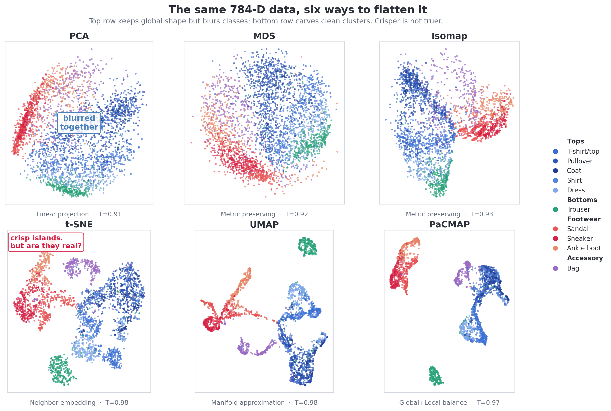
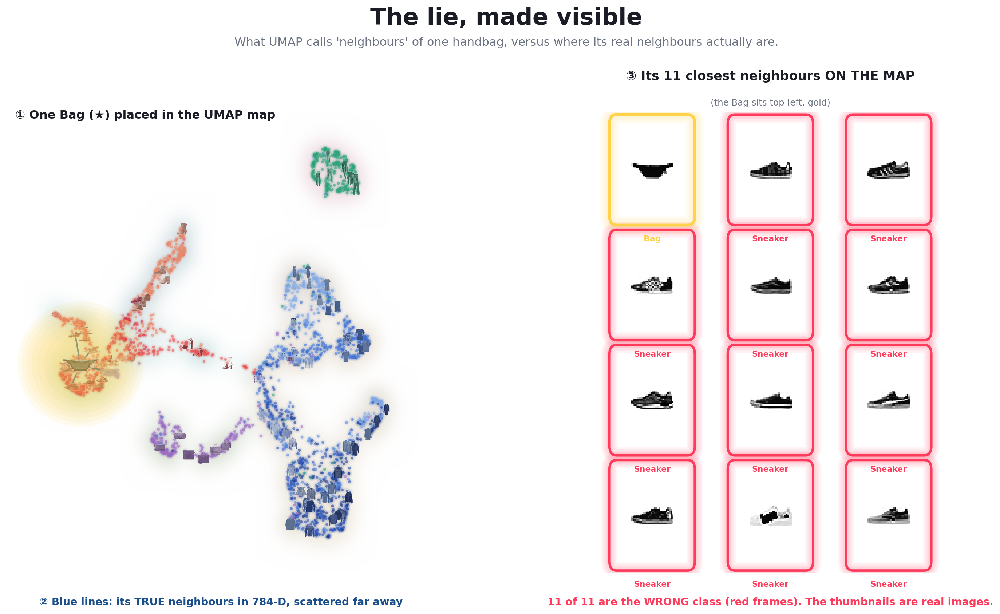
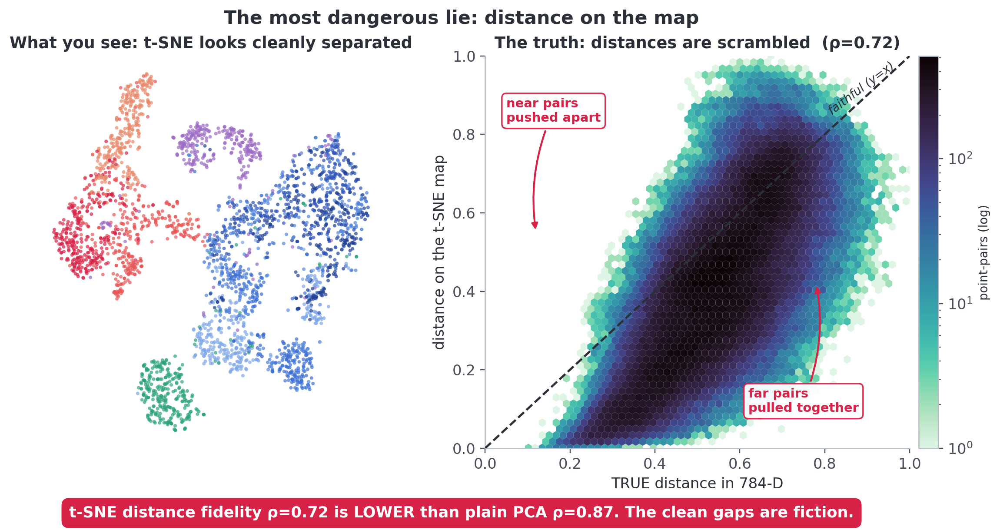
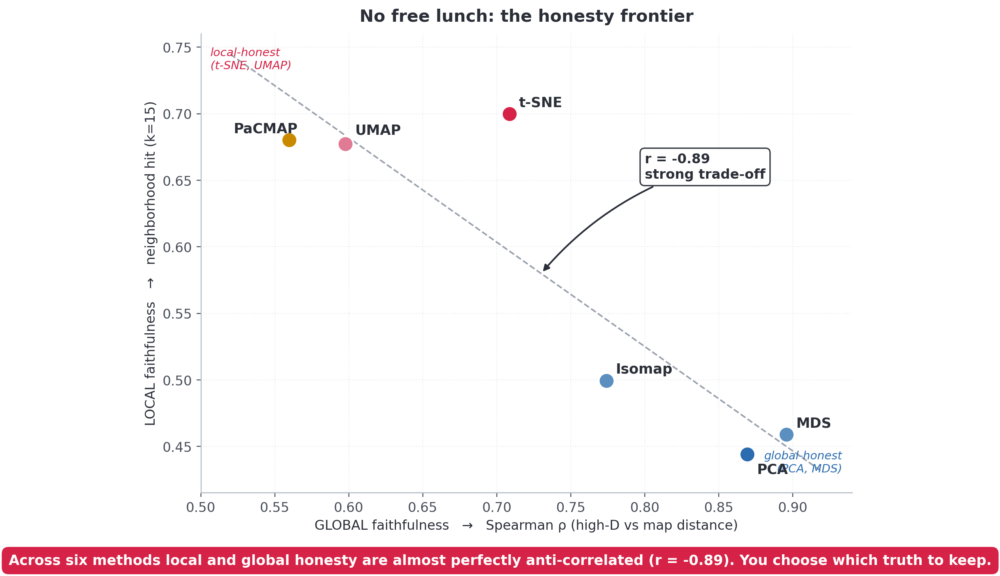

Every pretty t-SNE map is, to some degree, a lie. This page shows you how to see it.
scroll
The problemYou cannot see 784 dimensions
A Fashion-MNIST image is 784 numbers. To look at a dataset of them,
we squeeze 784 dimensions down to a 2-D scatter plot.
That squeeze is lossy. The map is forced to place some points together that
are really far apart, and to tear apart some that are really close. The plot looks like
an answer, but it is closer to a claim that needs checking.
Most projects stop at the plot and trust it.
We make the distortion itself the thing we visualize.
Step 1 · 2The same data, six ways to flatten it
We run six classic methods, ordered from linear to non-linear. The top row keeps the
global shape but blurs the classes; the bottom row carves clean islands.

The crisp methods (t-SNE, UMAP) win on local fidelity. That sets up the
whole question: is crisper actually truer?
Step 3 · the contributionThe lie, made visible
Here is one handbag, and the neighbors UMAP invents around it. The thumbnails are
real images, so you can judge the similarity yourself.

Left: the bag (gold star) in the UMAP map; blue lines reach its true 784-D
neighbors, far away. Right: the eleven points UMAP puts next to it on the map are
all sneakers. The crisp neighborhood is mostly fabricated.
11/11
map neighbors that are the wrong class
784→2
dimensions collapsed into the plot
Step 3bThe most dangerous lie is distance
People love to read "how far apart" two clusters are on a t-SNE map. They should not.

A faithful map keeps every pair of points on the diagonal. t-SNE pushes near
pairs apart and pulls far pairs together. Its distance fidelity is only 0.72.
t-SNE distance fidelity is ρ = 0.72,
lower than plain PCA at 0.87. The clean gaps between islands are fiction.
Step 3cSame data, same score, different story
Maybe a quality score would catch the problem? It does not. As we sweep t-SNE's
perplexity, the score barely moves while the shape changes completely. Press play.
The trustworthiness score stays near 0.98 the whole way.
Step 5 · the lawNo free lunch
Put every method on two axes: how well it keeps global distance, and how well it keeps
local neighborhoods. They fall on a line.

Local and global honesty are anti-correlated at r = -0.89. The crispness that
makes t-SNE and UMAP look clean is bought with global geometry.
In dimensionality reduction, honesty is conserved.
You do not pick the best map. You pick which truth to keep.
Explore it yourselfThe interactive diagnosis
clickany point to X-ray its true (blue) and false (red) neighbors.
lassoa cluster and watch the same points scatter across all six maps.
TakeawayA projection is a question, not an answer
We do not show the result of dimensionality reduction. We show its honesty.
Trust local adjacency on t-SNE and UMAP. Trust global layout on PCA and MDS. And before
you claim any structure is real, check the per-point X-ray.